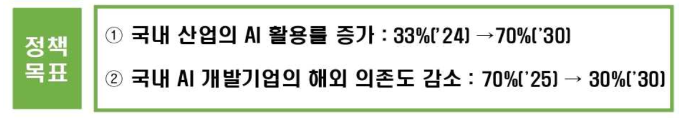
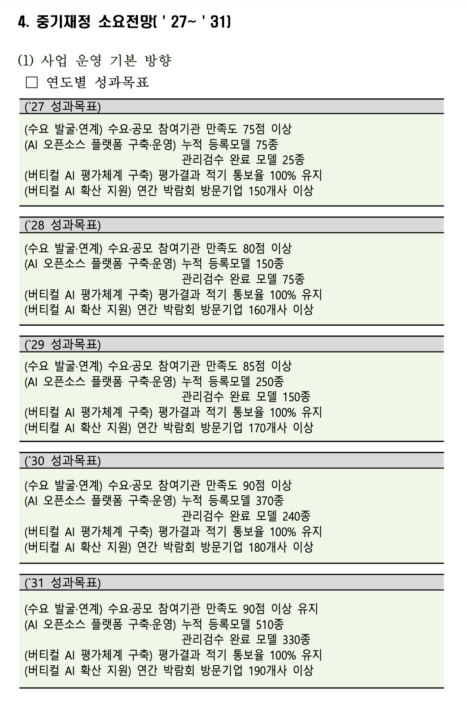

예산 협의실습 — 14분임에 던질 질문 카드
상대 = 14분임 「K-버티컬 AI 육성사업」('27 예산 3,664백만원). 순서: 질문1 → 질문2 → 질문3. 무슨 답이 나와도 "성과를 못 잰다"로 몰아가기.
📌 결정적 증거 — 상대 보고서에 '정책목표'는 있는데 '성과목표'엔 그 목표가 없다
정책목표 이 두 목표를 세워놓고…

연도별 성과목표 …정작 여기엔 활용률·의존도가 없음

정책목표(활용률 70%·해외의존도 30%)를 재는 지표가 5년 성과목표(만족도·등록 종수·방문 기업수)에 하나도 없음 → 목표 달성 여부 측정 불가
질문 1 · 발판 "평가에 예산 2/3를 왜 몰아넣나?"
"전체 예산의 약 3분의 2(2,450백만원)를 'AI 채점용 데이터셋' 한 항목에 쓰십니다. 개발기업은 개발 단계에서 이미 성능을 검증받고, 플랫폼 등록 시 별도 검수를 또 거칩니다. 정부의 '독자 AI 모델 프로젝트'가 이미 성능을 평가하고, AX-Sprint는 수요기업의 91%를 연결하고 있습니다. 그렇다면 (a) 기존 검증·평가와 겹치지 않는 근거, (b) 예산 3분의 2를 100% 국비로 매년 새로 만드는 이유, (c) 그 혜택이 개발기업에 돌아가는데 공공 환원은 어떻게 담보하는지 설명해 주십시오."
🎯 예산이 채점데이터 한 곳에 쏠렸고 · 비슷한 걸 이미 다른 사업이 하며 · 100% 국비인데 혜택은 민간이 가져간다.
🛡️ "산업특화라 다르다" → "겹치지 않는 부분은 좁은데 그게 예산 2/3를 정당화합니까?"(→질문2) · "공개해 환원" → "핵심 평가셋은 비공개라 쓰셨는데, 공개분만이면 대부분 기업 몫 아닙니까?"
질문 2 · ⭐결정타 "정책목표를 재는 성과지표가 왜 없나?"
"위 표처럼 정책목표를 'AI 활용률 33%→70%', '해외 의존도 70%→30%'로 명확히 세우셨습니다. 그런데 연도별 성과목표엔 '등록 모델 수·박람회 방문 기업 수·만족도'만 있고 이 두 목표를 재는 지표가 하나도 없습니다. 3,664백만원을 써서 활용률과 해외의존도가 실제로 이 목표대로 가는지는 무엇으로 확인합니까?"
🎯 자기가 세운 정책목표(70%·30%)를, 정작 해마다 재는 성과지표엔 안 넣음 → 목표 달성 여부를 판단할 방법이 없음(문서 내부 모순, 반박 불가).
🛡️ "등록 모델 늘면 활용률도 는다" → "그 인과를 재는 지표가 없습니다. 예산 성과평가는 무엇으로 합니까?"
질문 3 "진짜 장벽이 '정보'가 맞나?" (진단·대안 저격)
"이 사업의 핵심은 수요–개발기업을 잇는 플랫폼입니다. AI 도입 부진의 진짜 원인이 '정보 부재'가 맞습니까? 정보가 있어도 도입 비용 부담·해외 대비 부족한 자체 데이터 때문에 못 하는 경우가 큽니다. 그렇다면 수요기업 비용을 직접 덜어주는 기존 AI 바우처 대비, 정보를 모아주는 플랫폼이 도입을 더 늘린다는 근거는 무엇입니까?"
🎯 문제의 원인 진단이 틀렸을 수 있고 · 더 직접적 대안(바우처)이 있는데 왜 플랫폼인가.
🛡️ "바우처는 국산 계약으로 안 이어졌다" → "그건 바우처 설계 문제지, 플랫폼이 비용·데이터 장벽을 푸는 건 아닙니다."
🔑 질문1(편중·중복)로 묶고 → 질문2(정책목표 미측정)로 결정타 → 질문3(진단 자체)으로 마무리.
⚠️ 하지 말 것: ① "개발비 0원" 언급 금지(→"개발은 타 사업 담당" 역공). ② "명백한 중복" 단정 금지, "겹치지 않는 근거가 뭐냐" 질문형으로. ③ 상대 계산식·단가(기능점수·감리비)는 건드리지 말 것.